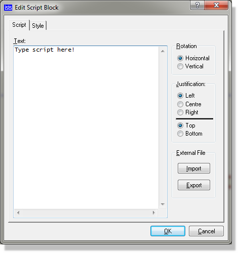

A major feature of Proteus is its ability to support free format text scripts, and the numerous uses it puts them to. These uses include:
The procedure for placing and editing scripts are almost identical as both operations involve the edit script block dialogue form.
To place a script:

To edit a script:
See the graphics and text style tutorial under Editing Local Styles for more details of editing local text styles.
You can resize the Edit Script Block dialogue form to make the Text field bigger and then save the size using the Save Window Size command on the Window’s ‘system’ menu (click on the button at the far left of the title bar).
Proteus currently supports the following script block types:
|
Script Block Type |
Block Header |
|
Sheet Global Net Property Assignment |
*NETPROP |
|
Sheet Property Definition |
*DEFINE |
|
Parameter Mapping Table |
*MAP ON varname |
|
Model Definition File |
*MODELS |
|
Named Script |
*SCRIPT type name |
|
SPICE Model Script |
*SPICE type name |
Field Blocks are deprecated for new designs in Proteus 8. Non-physical parts can be packaged directly in the layout module and properties added through the Bill of Materials property editor. The text below remains in place temporarily during transition.
See Physical Terminals for more information on physical terminals.
See Schematic and Layout regarding packaging considerations for PCB Design.
Field blocks are primarily intended to facilitate the assignment of properties to connectors made from physical terminals. A special means to do this is required since when physical terminals are used, there is no single entity on the schematic that represents the connector and to which properties could be directly attached.
An example block is shown below:
*FIELD
J1,PACKAGE=CONN-D9
J2,PACKAGE=CONN-D25
This assigns connector J1 the PCB package for a 9 pin D connector, and J2 the package for a 25 way connector.
You can assign properties to ordinary components as well, but there is generally little point since you can add them directly to the components.
A net property is normally assigned by the placement of a wire label with the syntax:
<prop>=<value>
However, there are occasions when you wish a large number of nets to carry the same property. Most often, the requirement is for all the circuitry on a particular sheet to be of a particular type (perhaps extra wide tracking for a power supply) and it is for this purpose that a NETPROP block may be used. For example, if the block:
*NETPROP
CLASS=POWER
is included on a sheet, then all nets whose wires do not carry explicitly net properties will be assigned the net property CLASS=POWER.
See Using a Wire Label to Assign a Net Property for more information about net properties.
A sheet property is essentially a variable which is defined on a given sheet and may be used in property expressions within components' property lists on that sheet. Sheet properties defined on the root sheets of a design, also appear in the netlist and may be used as control parameters by software such as the VSM simulators that reads the netlist.
An example block is shown below:
*DEFINE
TEMP=40
MINSTEPS=100
This defines two properties TEMP and MINSTEPS, and would be placed on the root sheet of a design such that they would be passed to VSM as simulation control parameters.
This is considered a highly advanced topic, and one which is only of great importance if you are involved in creating universal models for use with VSM. Further information on this is given in the VSM manual, but for completeness, we provide an example parameter mapping table here:
*MAP ON VALUE
7400 : TDLH=12n,TDHL=7n
74LS00 : TDLH=10n,TDHL=6n
74S00 : TDLH=5n,TDHL=3n
This table would be placed on the model schematic for a 2 input NAND gate, and would select different values for TDLH and TDHL according to the value (i.e. type) of the parent object. Also on the child sheet would be a NAND_2 primitive with the properties:
TDLH=<TDLH>
TDHL=<TDHL>
At netlist time, the parameter mapping table would examine the parent object's VALUE property and if, say, it were 74LS00, then the sheet properties TDLH=10n and TDHL=6n would be defined for that instance of the model. Then, on processing the NAND_2 primitive, these values would be substituted for <TDLH> and <TDHL> such that the primitive would acquire the correct timing to model a 74LS00.
A DEFAULT case is also supported.
These blocks are used only with the VSM simulators (currently, in fact, only with the Analogue simulator) and provide a shorthand method for managing the large numbers of properties that some of the simulator primitives use. For example, the bipolar transistor model has over 30 different properties and it would be fairly hopeless if you had to assign all of these individually for each transistor on the circuit.
Instead, you can use a MODELS block to define the properties for a particular type of transistor, and then refer to that set of properties using a model name.
An example block is shown below:
*MODELS
741_NPN : BETAF=80,ISAT=1E-14,RB=100,VAF=50,\
TAUF=0.3E-9,TAUR=6E-9, CJE=3E-12,CJC=2E-12
741_PNP : BETAF=10,ISAT=1E-14,RB=20, VAF=50,\
TAUF=1E-9, TAUR=20E-9,CJE=6E-12,CJC=4E-12
This defines the two transistor types used in a 741 IC. Individual transistors could then be given the values 741_NPN or 741_PNP and VSM would automatically give them the characteristics defined in the model table.
See the VSM manual for further discussion of primitive models.
In certain circumstances it is useful to be able to export a named block of text to an external application. In particular the SPICE and SPICE-AGE netlist formatters make use of the named scripts PSPICE and SPICE-AGE to supply control information for the simulations.
A typical named script block is shown below. Note that the end of the named script is marked by an ENDSCRIPT keyword, though this is optional if there are no other blocks in the script object.
*SCRIPT PROGRAM 7493
// Declare linkage to pins and local variables:
PIN CKA, CKB, RA, RB
PIN QA,QB,QC,QD
INT counta = 0, countb = 0
// Handle single-bit ‘A’ counter and assign output:
IF RA=H THEN
counta = 0
ELIF CKA=HL THEN
counta = (counta+1) % 2
ENDIF
QA = counta & 1
// Handle three-bit ‘B’ counter and assign output:
IF RB=H THEN
countb = 0
ELIF CKB=HL THEN
countb = (countb+1) % 8
ENDIF
QB = countb & 1
QC = countb & 2
QD = countb & 4
*ENDSCRIPT
These scripts allow SPICE input cards to be typed on the schematic and loaded directly into PROSPICE at simulate time. This can be handy if you want to develop or test SPICE models in native SPICE format in the native SPICE format.
Further Information on this is provided in the Proteus VSM manual.